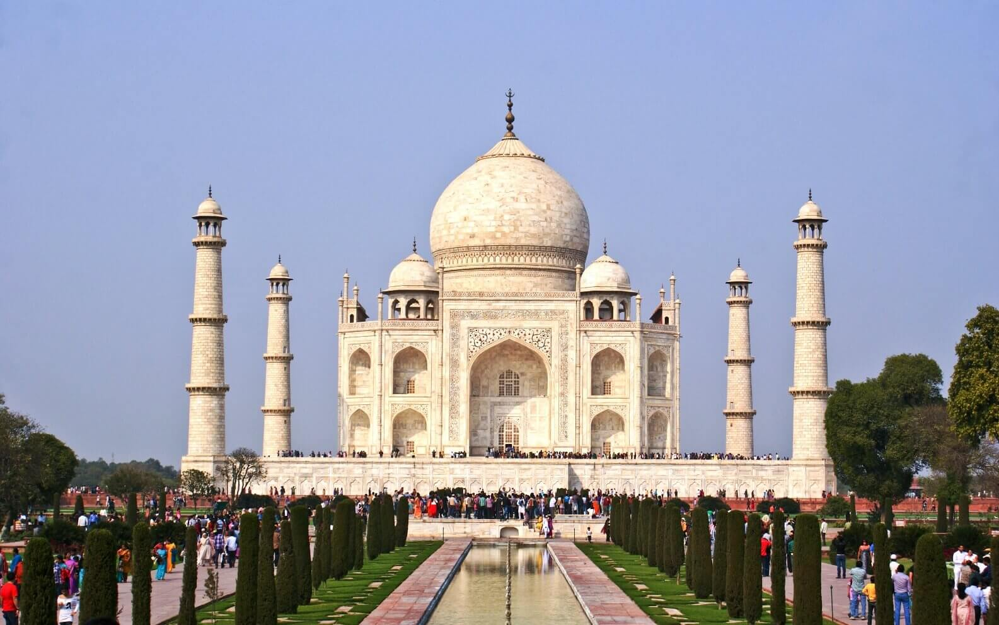
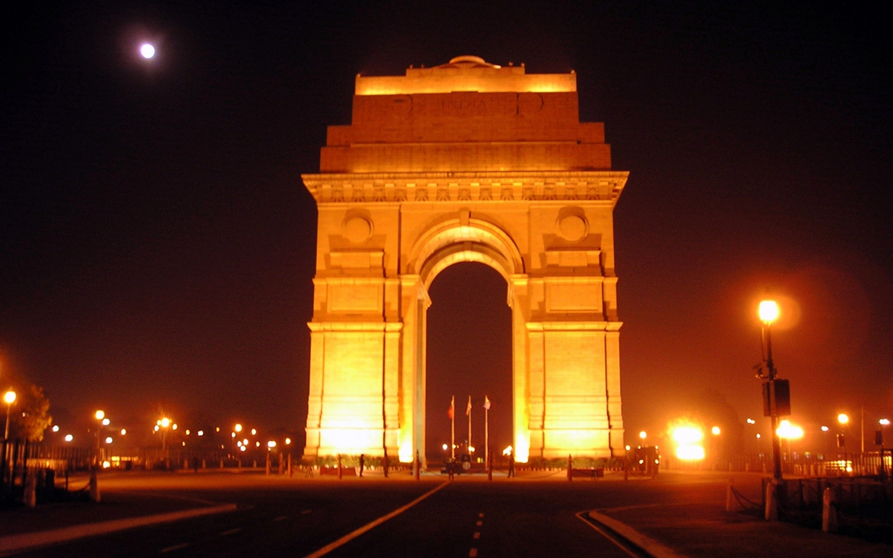
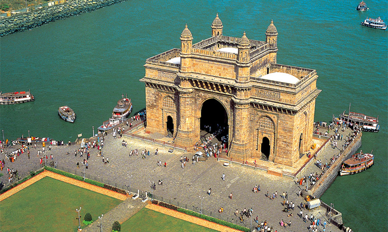
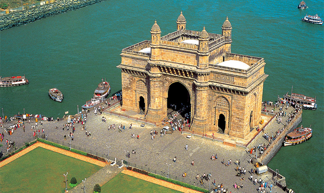

TOURIST PLACES OF INDIA


 

1.TAJ MAHAL
The Taj Mahal is an enormous mausoleum complex commissioned in 1632 by the Mughal emperor Shah Jahan to house the remains of his beloved wife.
Constructed over a 20-year period on the southern bank of the Yamuna River in Agra India, the famed complex is one of the most outstanding examples of
Mughal architecture, which combined Indian, Persian and Islamic influences. At its center is the Taj Mahal itself, built of shimmering white marble
that seems to change color depending on the daylight. Designated a UNESCO World Heritage site in 1983, it remains one of
the world’s most celebrated structures and a stunning symbol of India’s rich history.
2.INDIA GATE
India Gate is one of the largest war memorials in India. The monument was designed by Edwin Lutyens, the chief architect of New Delhi.
The foundation stone of India Gate was laid by the Duke of Connaught, on 10th February 1921.It took approximately 10 years to complete
the construction work on the monument, which came to an end in 1931.The walls of India Gate have been inscribed with the names of the
Indian soldiers who died in World War I and the Afghan wars. The monument rises to a height of 42 meters and has many important roads
spreading out from it.The arch of India Gate houses a shrine, inside which is the ever-burning Amar Jawan Jyoti.
3.RED FORT
Red Fort, also called Lal Qalʿah , also spelled Lal Kila or Lal Qila , Mughal fort in Old Delhi, India. It was built by Shah Jahān
in the mid-17th century and remains a major tourist attraction. The fort was designated a UNESCO World Heritage site in 2007.
The fort’s massive red sandstone walls,which stand 75 feet (23 metres) high , enclose a complex of palaces and entertainment halls,
projecting balconies, baths and indoor canals, and geometrical gardens, as well as an ornate mosque. Among the most famous structures
of the complex are the Hall of Public Audience (Diwan-i-am).
GATEWAY OF INDIA
The Gateway of India is an arch-monument built in the early twentieth century in the city of Mumbai, in the Indian state of Maharashtra.
It was erected to commemorate the landing in December 1911 at Wellington Pier, Mumbai (then known as "Apollo Bunder") of King-Emperor George V
and Queen-Empress Mary , the first British monarch to visit India. At the time of the royal visit, the gateway was not yet built, and a
cardboard structure greeted the monarch. The foundation stone was laid in March 1913 for a monument built in the Indo-Saracenic style,
incorporating elements of 16th-century Gujarati architecture. The final design of the monument by architect George Wittet was
sanctioned only in 1914, and construction was completed in 1924. The structure is a triumphal arch made of basalt,which is 26 metres
(85 feet) high.